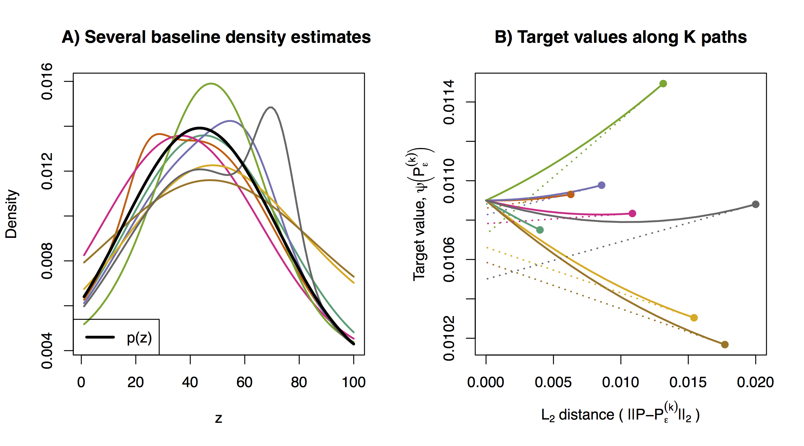
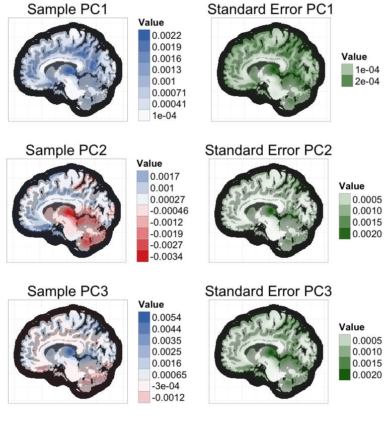
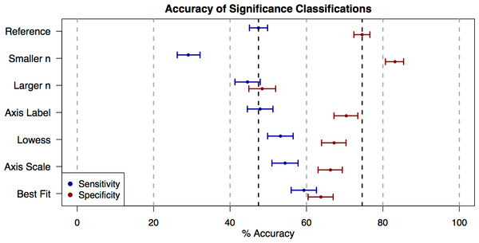

Research
For more information, please see my google scholar page.
Interpretability for machine learning models
Uninterpretable, black-box prediction models can provoke distrust, and their predictions can be difficult to combine with supplementary information in order to make decisions. In work with Cynthia Rudin and Francesca Dominici, we pointed out that U-statistics can be used to estimate well-known variable importance measures, which describe how much a given black-box model uses different covariates to gain prediction accuracy (Breiman 2001a, 2001b). We also developed a novel method for estimating how much unknown proprietary models rely on different covariates. Our method optimizes to find several approximations of the proprietary model that function as differently as possible, in terms of how much they rely on each covariate. We applied our method to study the dominant predictive factors in the criminal recidivism model COMPAS.
- arXiv paper: All Models are Wrong but many are Useful: Variable Importance for Black-Box, Proprietary, or Misspecified Prediction Models, using Model Class Reliance
Teaching visual intuition for influence functions
Statistical analyses often aim to describe a particular attribute (or estimand) of an underlying population distribution, such as the best fitting linear regression line. Influence functions measure how sensitive attributes like these are to changes in the underlying distribution. For example, influence functions can describe how much the best-fitting linear regression model will change if the proportion of points in a particular outlying region increases. Influence functions can also be used to improve estimation efficiency, generating estimators with certain kinds of optimality properties. Unfortunately, and despite their broad applicability, the technical theory underlying influence functions intimidates many researchers away from the subject.
In an educational paper with Edward Kennedy, we have tried make this topic more accessible. Our paper is based around two sets of visuals, which, we hope, can be similarly useful to illustrations of a derivative as the “slope at a point,” or illustrations of an integral as the “area under a curve.” For these calculus topics, a guiding intuition can be visualized in minutes, even though formal study typically takes over a semester of coursework.

- arXiv paper: Visually Communicating and Teaching Intuition for Influence Functions
Fast, exact bootstrap principal component analysis for high dimensional data (i.e. >1 million variables)
Principal Component Analysis (PCA) is a common dimension reduction step in many algorithms applied to high dimensional data, where the number of measurements per subject is much greater than the number of subjects. The resulting principal components (PCs) are random test statistics with sampling variability (i.e. if a new sample was recruited, the PCs for the new sample would be different). It is important to estimate this sampling variability, and the extent to which this variability propagates into test statistics that depend on PCA. A bootstrap procedure provides one method for variance estimation, but often comes with a prohibitively heavy computational burden.
To ease this burden, I worked with Vadim Zipunnikov and Brian Caffo to develop an exact method for calculating PCs in bootstrap samples that is an order of magnitude faster than the standard method. I applied this method to estimate standard errors of the 3 leading PCs of a brain MRI dataset (≈ 3 million voxels, 352 subjects) based on 1000 bootstrap samples (see below). Computation time was reduced from 4 days to 47 minutes, using a standard laptop.

The key intuition for this speed improvement comes from the fact that all bootstrap samples are contained in the same n-dimensional subspace as the original sample (where n is the sample size). If we represent bootstrap samples by their n-dimensional coordinates relative to this subspace, we can dramatically reduce computation times and memory requirements.
- JASA T&M paper
- bootSVD R package
for easy implementation of the bootstrap procedure
- ggBrain R package for creating brain image figures
How the effects of interventions vary across individuals
My previous work on this topic focused on adaptive clinical trials that allow for the possibility of approving an intervention only in a certain subgroup. My ongoing work studies how much variability remains that cannot be mitigated by tailoring the intervention by subgroup. This current work is motivated by studies of air pollution, where many individuals face the same exposure, but some individuals may experience greater harm as a result.
Evidence based data analysis -- studying statistical methodology in practice
Much statistical research focuses on the sampling variability of estimators under different theoretical scenarios. However, little is known on the sampling variability that is introduced when human investigators implement analysis methods differently. Knowledge on this human variability could form a key aspect of recommending statistical methods to investigators, and lead to improved reproducibility. In work with Jeff Leek, G. Brooke Anderson, and Roger Peng, we have proposed the concept of evidence based data analysis: the scientific study of how statistical methods perform in practice, when they are implemented, sometimes imperfectly, by analysts of different levels of statistical training.
In our work, we specifically looked at the common statistical practice of using exploratory data analysis (EDA) to identify significant predictors to include in a model. We conducted a survey in a statistics massive open online course, and asked students to rate the relationships shown in scatterplots as either significant or non-significant at the 0.05 level. Initial rating accuracy was poor, but in some cases improved with practice. Our work sheds light on how fostering statistical literacy can increase the clarity of communication in science, on the effectiveness of EDA for variable selection, and on the extent of damage caused when analysts do not correct for multiple hypotheses that are tested informally in the EDA process.
 Accuracy with which users can classify relationships that are truly significant (blue) and that are non-significant (red) on their first attempt of the survey. Each row denotes a different presentation style for the scatterplot shown (e.g. whether Lowess trend lines were added). See the full paper for more details.
Predicting biopsy results and latent health states for patients with low-risk prostate cancer
For patients with low-risk prostate cancer, prostate biopsies are a highly invasive aspect of active surveillance. I worked with Yates Coley & Scott Zeger on a Bayesian hierarchical model to predict a patient's latent cancer state based on data from previous prostate biopsies and prostate-specific antigen (PSA) measurements. The goal of this modeling approach is to help guide treatment decisions, and to reduce the number of unnecessary biopsies and prostatectomies.
My role in this project was to apply a method for fast latent state estimation based on new patient data. This would allow doctors to give patients in-clinic risk estimates, without having to refit the entire model with batch MCMC. The proposed method (based on Importance Sampling) does not require novel Bayesian techniques, but it does address one of the obstacles to applying Bayesian Hierarchical models in clinical settings.